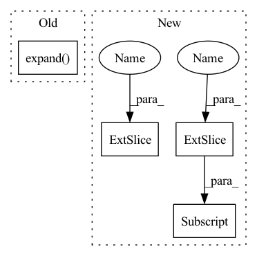

Pattern ID :3564
Before Change
x = x.unsqueeze(-1)
x = self.project_to_steps(x) // BxCxTxS
x = self.dropout(x)
x = x.unsqueeze(0).expand( targets.size(0), -1, -1, -1, -1)
copies, bsz, dim, tsz, steps = x.shape
steps = min(steps, tsz - self.offset)
predictions = x.new(bsz * copies * (tsz - self.offset + 1) * steps - ((steps + 1) * steps // 2) * copies * bsz)After Change
else:
pos_num = (end - start) // copies
predictions[start:end] = torch.einsum(
"bct,nbct->nbt", x[..., :-offset, i] , targets [... , offset:]
).flatten()
labels[start : start + pos_num] = 1.0
if weights is not None:In pattern: SUPERPATTERN
Frequency: 3
Non-data size: 4
Instances Fragment ID: 17645903
Project Name: kssteven418/i-bert
Commit Name: 3335de5f441ee1b3824e16dcd98db620e40beaba
Time: 2020-02-29
Author: alexei.b@gmail.com
File Name: fairseq/models/wav2vec.py
M Class Name: Wav2VecPredictionsModel
N Class Name: Wav2VecPredictionsModel
M Method Name: forward(3)
N Method Name: forward(3)
M Parent Class: nn.Module
N Parent Class: nn.Module
M File Name: fairseq/models/wav2vec.py
N File Name: fairseq/models/wav2vec.py
M Start Line: 411
M End Line: 439
N Start Line: 638
N End Line: 691
Before Change
x = x.unsqueeze(-1)
x = self.project_to_steps(x) // BxCxTxS
x = self.dropout(x)
x = x.unsqueeze(0).expand( targets.size(0), -1, -1, -1, -1)
copies, bsz, dim, tsz, steps = x.shape
steps = min(steps, tsz - self.offset)
predictions = x.new(bsz * copies * (tsz - self.offset + 1) * steps - ((steps + 1) * steps // 2) * copies * bsz)After Change
else:
pos_num = (end - start) // copies
predictions[start:end] = torch.einsum(
"bct,nbct->nbt", x [..., :-offset, i], targets[..., offset:]
).flatten()
labels[start : start + pos_num] = 1.0
if weights is not None:
weights[start : start + pos_num] = 1.0 Fragment ID: 17645899
Project Name: kssteven418/i-bert
Commit Name: 3335de5f441ee1b3824e16dcd98db620e40beaba
Time: 2020-02-29
Author: alexei.b@gmail.com
File Name: fairseq/models/wav2vec.py
M Class Name: Wav2VecPredictionsModel
N Class Name: Wav2VecPredictionsModel
M Method Name: forward(3)
N Method Name: forward(3)
M Parent Class: nn.Module
N Parent Class: nn.Module
M File Name: fairseq/models/wav2vec.py
N File Name: fairseq/models/wav2vec.py
M Start Line: 411
M End Line: 439
N Start Line: 638
N End Line: 691
Before Change
device = x.device
b, t, e, m = *x.shape, self.num_mem_kv
mem = self.mem_kv.expand( m, b, e)
keys = default(keys, torch.empty(b, 0, e, device=device))
x, keys = x.transpose(0, 1), keys.transpose(0, 1)
After Change
dot = torch.einsum("bie,bje->bij", q, qk)
// qk attention requires tokens not attend to self
i = torch.arange(t)
dot[:, i, i] = -1e-5
if self.causal:
i, j = torch.triu_indices(t, t, 1)
dot [:, i, j] = float("-inf")
dot = dot.softmax(dim=-1)
out = torch.einsum("bij,bje->bie", dot, v) Fragment ID: 17645904
Project Name: lucidrains/reformer-pytorch
Commit Name: d2462f9b33944e20f5fbeaf19efaa9591378ba65
Time: 2020-01-28
Author: lucidrains@gmail.com
File Name: reformer_pytorch/reformer_pytorch.py
M Class Name: SelfAttention
N Class Name: FullQKAttention
M Method Name: forward(4)
N Method Name: forward(3)
M Parent Class: nn.Module
N Parent Class: nn.Module
M File Name: reformer_pytorch/reformer_pytorch.py
N File Name: reformer_pytorch/reformer_pytorch.py
M Start Line: 386
M End Line: 403
N Start Line: 330
N End Line: 349